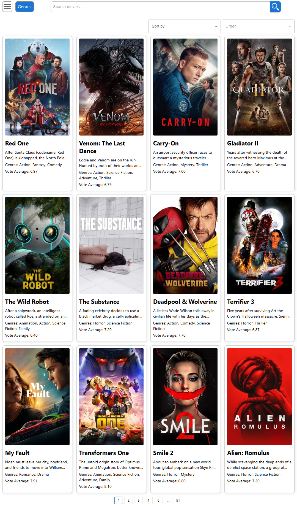
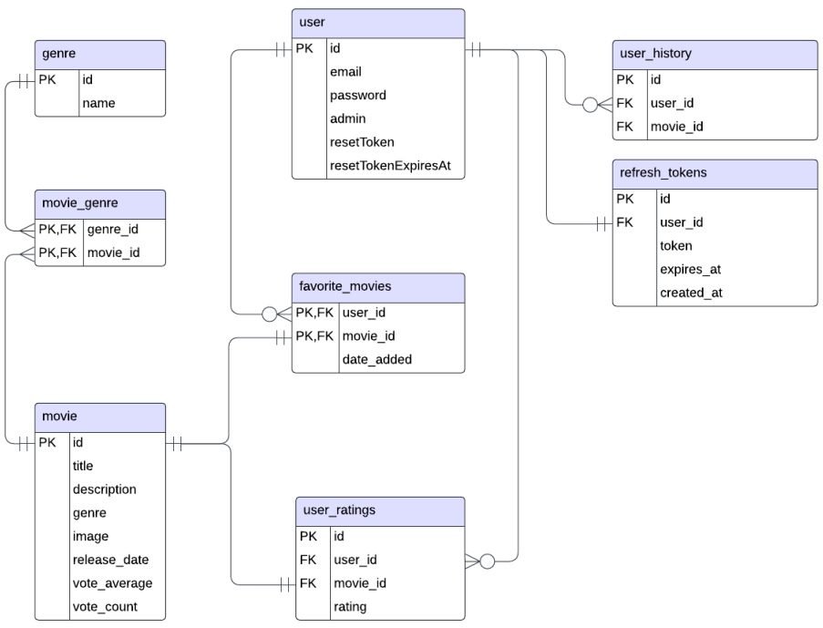
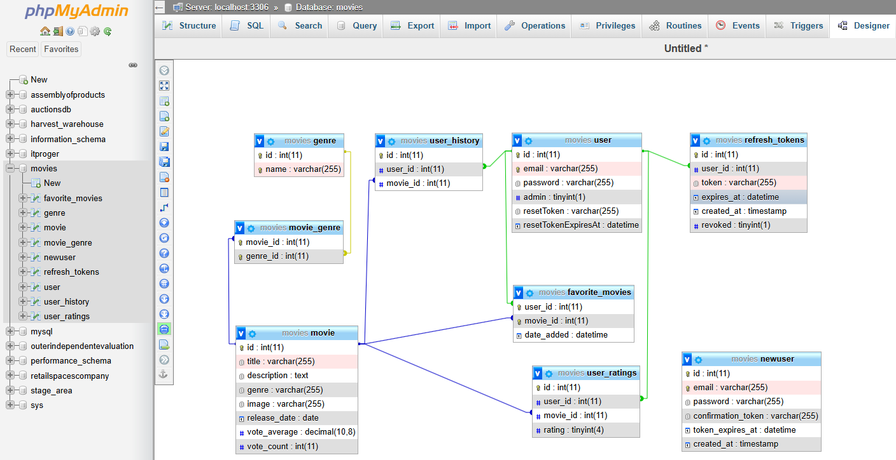
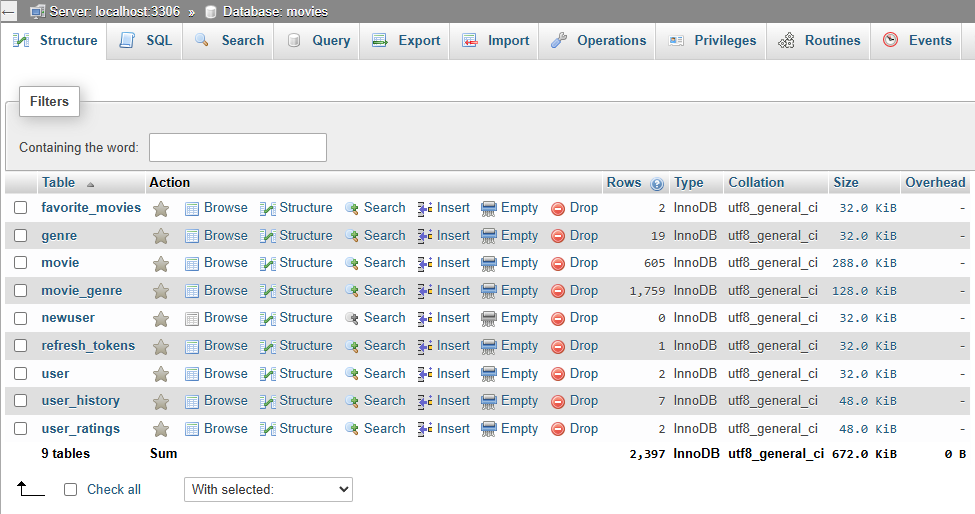

ТЕМА проєкту та Посилання на репозиторії
Тема: Веб-додаток "Movies Library" (Бібліотека фільмів).
Опис: Додаток дозволяє користувачам переглядати список фільмів, шукати їх, переглядати детальну інформацію, додавати фільми до списку улюблених, отримувати рекомендації та (для адміністраторів) керувати списком фільмів та жанрів. Додаток використовує клієнт-серверну архітектуру.
Посилання на репозиторій: https://github.com/Roman13456/movies_library_app.git
СТЕК ТЕХНОЛОГІЙ та Опис Бізнес логіки
Стек технологій:
- Frontend: React, Redux (з Redux Toolkit), Axios, CSS (модулі або окремі файли). React Router (для навігації), Formik/Yup (для форм).
- Середовище: Node.js, npm.
- Backend: Node.js
- База даних: MySql
Бізнес логіка:
- Користувачі можуть реєструватися, авторизуватися та скидувати пароль.
- Користувачі можуть переглядати інформацію про фільми, шукати/сортувати їх.
- Авторизовані Користувачі можуть додавати/видаляти фільми зі списку "Улюблене".
- Авторизовані користувачі можуть ставити рейтинг фільмам.
- Система надаває персоналізовані рекомендації на основі вподобань/рейтингів авторизованих користувачів.
- Адміністратори мають доступ до панелі керування для додавання/редагування/видалення фільмів.
- API використовується для взаємодії між фронтендом та бекендом (отримання даних, аутентифікація, збереження змін).
Функціональні та нефункціональні вимоги
Функціональні вимоги:
- Реєстрація та автентифікація користувачів (включаючи підтвердження email, скидання пароля).
- Перегляд детальної інформації про фільм (опис, актори, рейтинг, трейлер тощо).
- Перегляд списку фільмів з пагінацією/прокруткою.
- Пошук і сортування фільмів.
- Фільтрація фільмів за жанром.
- Можливість додати/видалити фільм до/з особистого списку "Улюблене".
- Можливість виставити/змінити власний рейтинг фільму (наприклад, від 1 до 10 зірок).
- Відображення персональних рекомендацій фільмів.
- (Для Адміністратора) Можливість додавати нові фільми (з назвою, описом, постером, жанрами тощо).
- (Для Адміністратора) Можливість редагувати існуючі фільми.
- (Для Адміністратора) Можливість видаляти фільми.
- Зручна навігація по сторінках веб-додатку.
Нефункціональні вимоги:
- Підтримка адаптивного інтерфейсу для коректної роботи на різних пристроях (десктопи, планшети, смартфони).
- Використання надійних методів захисту даних користувачів, включаючи шифрування паролів та токенів.
- Підтримка підтвердження реєстрації через сторонні сервіси, такі як SendGrid (якщо використовується).
- Програмне забезпечення має бути стійким до збоїв та помилок під час роботи з базою даних (якщо використовується).
- Наявність механізмів для обробки помилок з поверненням зрозумілих повідомлень користувачам.
- Захист від несанкціонованого доступу до адміністративної панелі.
СКРІН головної сторінки
Frontend частина
Фронтенд розроблено з використанням React та Redux (Redux Toolkit) для управління станом.
Основні компоненти:
App.js: Кореневий компонент, налаштування маршрутизації (ймовірно з React Router).src/components/: Містить UI компоненти, згруповані за призначенням:Navigation: Верхня навігаційна панель, пошук.NavBurger: Компонент бургер-меню для навігації (можливо, мобільної).MoviesList: Відображення списку фільмів.MoviesListSearch: Компонент для пошуку фільмів (можливо, інтегрований вMoviesListабоNavigation).MovieItem: Окремий елемент списку фільмів.MovieDetails: Сторінка з детальною інформацією про фільм.ChangeFavorites: Компонент для додавання/видалення з улюблених на сторінці деталей.UserFavorites: Список улюблених фільмів користувача.UserReccomendations: Компонент для відображення рекомендованих фільмів.AdminPanel: Інтерфейс для керування фільмами/жанрами (для адмінів).GenreForm: Форма для додавання/редагування жанрів.MovieForm: Форма для додавання/редагування фільмів.GenresListPicker: Компонент для вибору жанрів (ймовірно, у формах).Registerform: Компоненти, пов'язані з реєстрацією та авторизацією:LoginForm: Форма входу.SignupForm: Форма реєстрації.SignupConfirmation: Етап підтвердження реєстрації.EmailConfirmation: Етап підтвердження email (можливо, включаєResetPassword).SignedUp: Компонент для залогіненого користувача (можливо, включаєChangeNickname).
formsUI/: Набір перевикористовуваних компонентів для побудови форм:TextfieldWrapper,TextareaWrapper,SelectFieldWrapper,CheckboxWrapper: Обгортки для полів вводу.ImageInput: Компонент для завантаження зображень.delButton: Кнопка видалення (можливо, у формах).
userRatingStars: Компонент для відображення/встановлення рейтингу зірочками.PopUp: Компонент для спливаючих повідомлень/вікон.SliderPagination: Компонент пагінації для списків/слайдерів.Spinner: Індикатор завантаження.NotFound: Компонент для сторінки 404.shared/: Ймовірно, містить загальні елементи (UI, контекст).
src/redux/: Управління станом:store.js: Головний файл конфігурації Redux store, що об'єднує всі reducers (slices).slices/: Директорія містить "зрізи" (slices) стану Redux Toolkit:favoritesSlice.js: Керує станом списку улюблених фільмів користувача (додавання, видалення, завантаження).userSlice.js: Керує станом аутентифікації користувача (статус входу, токен, інформація про користувача).userRatingsSlice.js: Керує станом рейтингів, виставлених користувачем.moviesSlice.js: Керує станом списку фільмів (завантаження, пагінація, фільтри, результати пошуку).recommendationsSlice.js: Керує станом рекомендованих фільмів.
thunks/: Директорія містить асинхронні дії (thunks), які взаємодіють з API та діспатчать синхронні дії зі slices:moviesThunks.js: Асинхронні запити для отримання списку фільмів, деталей фільму тощо.userRatingsThunks.js: Асинхронні запити для відправки/отримання рейтингів користувача.userThunks.js: Асинхронні запити для реєстрації, логіну, виходу, оновлення профілю користувача.
src/api/: Містить модулі для інкапсуляції логіки взаємодії з бекенд API:axiosClient.js: Налаштування екземпляру Axios (базовий URL, interceptors для додавання токенів авторизації або обробки помилок).moviesApi.js: Функції для запитів, пов'язаних з фільмами (отримання списку, деталей, пошук).userApi.js: Функції для запитів, пов'язаних з користувачем (реєстрація, логін, отримання профілю).
Стилізація: Використовуються CSS файли, що імпортуються безпосередньо в компоненти, або глобальні стилі в `index.css`.
Backend частина
Бекенд розроблено на Node.js з використанням фреймворку Express.js.
Основні технології та компоненти:
- Мова/Платформа: Node.js
- Фреймворк: Express.js
- База даних: MySQL (з використанням драйвера `mysql2`).
- Аутентифікація:
- JWT (JSON Web Tokens) для керування сесіями (бібліотека `jsonwebtoken`).
- Refresh tokens (зберігаються в базі даних та HttpOnly cookies) для довготривалих сесій.
- Хешування паролів за допомогою `bcryptjs`.
- Підтвердження реєстрації та скидання пароля через email (використовується `SendGrid`).
- API Маршрути (Endpoints): Набір маршрутів під префіксом `/api/` забезпечує:
- Повну автентифікацію користувачів (реєстрація, вхід, вихід, підтвердження email, скидання пароля, оновлення токена, отримання профілю).
- CRUD операції для фільмів (створення, читання, оновлення, видалення - з перевіркою прав адміністратора).
- Отримання списків фільмів з пагінацією, сортуванням та фільтрацією за жанром.
- Пошук фільмів (інтегровано з Elasticsearch).
- Керування списком улюблених фільмів користувача.
- Додавання/отримання рейтингів фільмів.
- Запис історії переглядів фільмів користувачем.
- Отримання рекомендацій (персоналізованих та за жанрами).
- Отримання списку всіх жанрів.
- Приклади ключових ендпоінтів:
POST /api/register: Реєстрація нового користувача.POST /api/login: Автентифікація користувача та отримання токенів.GET /api/movies: Отримання списку фільмів (з параметрами для пагінації, сортування, фільтрації).GET /api/movies/:id: Отримання детальної інформації про конкретний фільм.GET /api/movies/search: Пошук фільмів за ключовими словами (використовує Elasticsearch).GET /api/favorites(потребує аутентифікації): Отримання списку улюблених фільмів користувача.POST /api/favorites(потребує аутентифікації): Додавання фільму до улюблених.DELETE /api/favorites/:movieId(потребує аутентифікації): Видалення фільму з улюблених.GET /api/recommendations/personalized(потребує аутентифікації): Отримання персоналізованих рекомендацій.POST /api/movies(тільки для адміністраторів): Створення нового фільму.PUT /api/movies/:id(тільки для адміністраторів): Оновлення існуючого фільму.DELETE /api/movies/:id(тільки для адміністраторів): Видалення фільму.
- Обробка зображень: Використовується Cloudinary для завантаження та зберігання зображень (постерів фільмів)
- Пошук: Інтеграція з Elasticsearch для ефективного повнотекстового пошуку по фільмам.
- Структура папок: Код організовано в директорії: `config` (налаштування БД), `routes` (обробники маршрутів), та основний файл `app.js`.
База даних
Для зберігання даних додатку використовується реляційна система управління базами даних (СУБД) MySQL.
Структура бази даних
Наступна ER-діаграма ілюструє взаємозв'язки між основними сутностями (таблицями) бази даних "Movies Library":
Основні таблиці (сутності) та їх призначення:
user: Зберігає інформацію про зареєстрованих та підтверджених користувачів (ID, email, хеш пароля, статус адміністратора, токени для скидання пароля).newuser: Тимчасово зберігає дані нових користувачів до підтвердження їхньої електронної пошти (email, хеш пароля, токен підтвердження, час дії токена).refresh_tokens: Зберігає refresh-токени для підтримки сесій користувачів (ID користувача, сам токен, час дії токена).movie: Містить основну інформацію про фільми (ID, назва, опис, рядок з жанрами, посилання на зображення, дата виходу, середній рейтинг, кількість голосів).genre: Довідник жанрів (ID, назва жанру).movie_genre: Зв'язуюча таблиця для відношення "багато-до-багатьох" між фільмами та жанрами (ID фільму, ID жанру).user_ratings: Зберігає оцінки, виставлені користувачами конкретним фільмам (ID користувача, ID фільму, оцінка).favorite_movies: Зберігає інформацію про фільми, додані користувачами до списку "Улюблене" (ID користувача, ID фільму, дата додавання).user_history: Записує історію переглядів фільмів користувачами (ID користувача, ID фільму, дата перегляду).
Взаємодія з базою даних на бекенді здійснюється за допомогою драйвера mysql2 для Node.js без використання ORM.
Середовище управління базою даних (phpMyAdmin)
Для ефективного управління та взаємодії з базою даних MySQL у проекті "Movies Library" використовується популярний веб-інструмент phpMyAdmin. Він надає зручний графічний інтерфейс для виконання широкого спектру адміністративних завдань.
За допомогою phpMyAdmin можна легко переглядати структуру таблиць, виконувати SQL-запити, імпортувати/експортувати дані, керувати користувачами та їхніми правами, а також візуально проєктувати схему бази даних. Це значно спрощує процес розробки та підтримки бази даних.
Наступні скріншоти демонструють інтерфейс phpMyAdmin, зокрема вигляд дизайнера схеми бази даних та перелік таблиць з їхньою структурою.
 Розгортання Застосунку (Application Deployment)
Ці інструкції описують кроки для локального розгортання застосунку "Movies Library", базуючись на наданих скріншотах.
1. Передумови (Prerequisites):
- Встановлений Git.
- Встановлений Node.js та npm.
- Встановлений Python.
- Встановлений та запущений MySQL сервер (доступний на localhost).
- Завантажений та розпакований Elasticsearch.
- Доступ до Інтернету для завантаження залежностей та клонування репозиторіїв.
2. Клонування Репозиторію:
- Відкрийте термінал (наприклад, Git Bash/MINGW64) у бажаній батьківській директорії.
- Клонуйте репозиторій клієнта й бекенд сервера (
movies_libraryтаnodejs):git clone https://github.com/Roman13456/movies_library_app.git
3. Налаштування Бази Даних MySQL та Заповнення Даними:
- Переконайтесь, що ваш MySQL сервер запущено.
- Створіть таблиці та заповніть їх фільмами з TMDB API за допомогою скрипту python_script.
- Для цього перейдіть в директорію з Python скриптом.
cd /шлях/до/movies_library_app/mysql/python_script - Створіть та активуйте віртуальне середовище:
python -m venv venv venv\Scripts\activate - Встановіть Python залежності:
pip install -r requirements.txt - Налаштуйте підключення до MySQL сервера в файлі
main.py. Для цього змініть параметри в змінній db_config на відповідного адмін користувача - Запустіть скрипт для створення таблиць та заповнення даними з TMDB:
python -u main.py
db_config = {
'host': 'localhost',
'user': 'root',
'password': 'root'
}4. Налаштування Elasticsearch:
- Перейдіть в директорію, куди ви розпакували Elasticsearch
cd /шлях/до/elasticsearch-8.15.3/ - Запустіть Elasticsearch:
bin/elasticsearch.bat
5. Налаштування та Запуск Backend Сервера:
- Перейдіть в директорію сервера
nodejs:cd /шлях/до/movies_library_app/nodejs - Встановіть залежності:
npm install - Налаштуйте підключення до MySQL сервера в файлі
db.js.
Для цього змініть параметри в змінній pool на відповідного адмін користувачаcd /шлях/до/movies_library_app/nodejs/config/db.js - Запустіть скрипт для індексації даних з MySQL в Elasticsearch:
node export_movies.js - Запустіть Backend сервер:
node app.js
const pool = mysql.createPool({
host: 'localhost',
user: 'root',
password: 'root',
database: 'movies',
waitForConnections: true,
connectionLimit: 10,
queueLimit: 0
});6. Налаштування та Запуск Frontend Клієнта:
- Перейдіть в директорію клієнта
movies_library:cd /шлях/до/movies_library_app/movies_library - Встановіть залежності:
npm install - Запустіть Frontend клієнт в режимі розробки:
npm start
7. Перевірка:
- Переконайтесь, що MySQL, Elasticsearch, Backend та Frontend успішно запустились без помилок у відповідних консолях.
- Відкрийте
http://localhost:3000/moviesу вашому браузері. - Перевірте основні функції застосунку.
ВИСНОВКИ
В ході виконання цього індивідуального проекту було розроблено веб-додаток "Movies Library".
- Реалізовано ключовий функціонал:
- Реєстрація та авторизація користувачів (з підтвердженням email та скиданням пароля).
- Пошук та сортування фільмів за різними критеріями (ключові слова, рейтинг, жанр).
- Перегляд персоналізованих рекомендацій на основі історії, оцінок та списку улюбленого.
- Система оцінювання фільмів користувачами.
- Керування особистим списком "Улюблене".
- Розроблено адміністративну панель для керування контентом (додавання, редагування, видалення фільмів).
- Застосовано сучасний стек технологій: React і Redux для фронтенду, Node.js/Express для бекенду, MySQL для бази даних, Elasticsearch для пошуку.
- Враховано нефункціональні вимоги: адаптивний інтерфейс, захист даних користувачів, стійкість до помилок.
- Набуто практичних навичок роботи з асинхронними запитами (Axios, Redux Thunk), маршрутизацією (React Router), створенням компонентів, управлінням станом, взаємодією з REST API та базами даних.